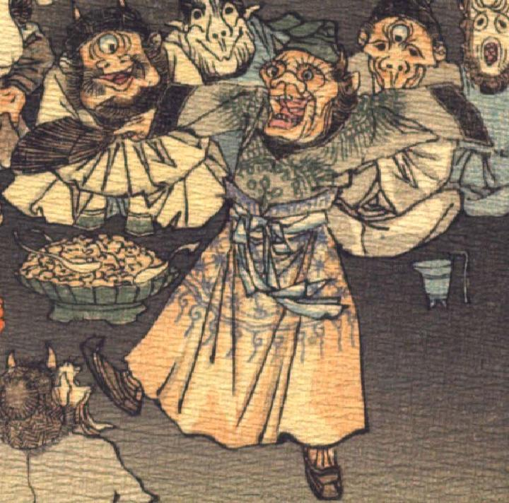

猿のような顔の鬼。緑色の頭巾をかぶり、額の脇に角を生やしている。目玉は丸く、長いまつげが飛び出ている。鼻は横に広がっている。口を開けて、歯をむき出している。模様の入った草色の上着と、黄色のスカート状の衣服を身に着け、靴をはいている。両腕を開き、右手に団扇を持ち、右足を上げて、踊っている。
著作者：J.Dautremer／出典：親書誌：U426_nichibunken_0123：Le vieillard et les démons／日付：2006／資源識別子：U426_nichibunken_0123_0003_0011
Copyright (c)2010- International Research Center for Japanese Studies, Kyoto, Japan. All rights reserved.